PoSyDyS 2026 — Companion Script
This script accompanies the paper "Differentiable Simulation for Power System Dynamics" (PoSyDyS 2026) and can be downloaded as a plain Julia script here.
It demonstrates four analysis workflows enabled by the differentiable simulation framework PowerDynamics.jl, all on the same modified IEEE 9-bus test system:
- Reference simulations — load-step response, all-SG vs mixed inverter system
- Eigenvalue analysis — tracking modal migration as the grid weakens
- Impedance extraction — Bode plots of Z_qd and cross-validation
- Gradient-based optimization — tuning GFL controller parameters via AD through the ODE solver
using PowerDynamics
using PowerDynamics.Library
using ModelingToolkit
using PoSyDysPaperCompanion
using NetworkDynamics
using Graphs
using DiffEqCallbacks
using OrdinaryDiffEqRosenbrock
using OrdinaryDiffEqNonlinearSolve
using CairoMakie
using LinearAlgebra
using OrderedCollections: OrderedDict
using SymbolicIndexingInterface: SymbolicIndexingInterface as SII
using Optimization, Optimisers, OptimizationOptimisersIEEE Conference Figure Theme (CairoMakie)
Figure Export Specifications for IEEE Conference (IEEEtran, conference mode)
Column widths (from IEEEtran.cls, letter paper, 0.625 in margins, 0.25 in column sep):
- Single-column figure →
\columnwidth= 3.5 in = 88.9 mm = 252 pt - Double-column figure →
\textwidth= 7.25 in = 184.2 mm = 522 pt
Format: line art → vector PDF (pt_per_unit=1); raster → PNG at px_per_unit=8 (≈576 DPI).
Two with_theme helpers are defined: ieee_theme() (single-col) and ieee_theme_wide() (double-col). Both use theme_latexfonts() so fonts match the LaTeX document.
Canonical figure dimensions in Makie pt units (1 pt = 1 CSS/PDF point).
FIGPATH = joinpath(pkgdir(PoSyDysPaperCompanion), "paper", "figures")
mkpath(FIGPATH)
theme_size() = theme_size(600, 400)
function theme_size(x, y)
if hasproperty(Makie.current_default_theme(), :Figure) && hasproperty(Makie.current_default_theme().Figure, :size)
Makie.current_default_theme().Figure.size
else
(x, y)
end
end
function base_theme()
merge(
theme_latexfonts(),
Theme(
fontsize = 8,
figure_padding = 2,
palette = (color = Makie.wong_colors(),),
Axis = (
spinewidth = 0.5,
xtickwidth = 0.5,
ytickwidth = 0.5,
xticksize = 3,
yticksize = 3,
xticklabelsize = 7,
yticklabelsize = 7,
xlabelsize = 8,
ylabelsize = 8,
),
Legend = (
labelsize = 7,
titlesize = 8,
framewidth = 0.5,
padding = (4f0, 4f0, 4f0, 4f0),
patchsize = (14f0, 6f0),
rowgap = 2,
),
Lines = (linewidth = 1.25,),
Scatter = (markersize = 4,),
Colorbar = (
ticklabelsize = 7,
labelsize = 8,
width = 10,
spinewidth = 0.5,
),
rowgap = 4,
colgap = 4,
)
)
end
function ieee_theme(scale=1/sqrt(2))
w = 252 # \columnwidth
merge(base_theme(), Theme(Figure = (size = (w, floor(Int, scale * w)),)))
end
function ieee_theme_wide(scale=1/sqrt(2))
w = 522 # \textwidth
merge(base_theme(), Theme(Figure = (size = (w, floor(Int, scale * w)),)))
end
nothing #hide #hmdThe Test System
We build three variants of the IEEE 9-bus:
- All-SG (RMS): classical SauerPai machines with AVR and governor (static PiLines)
- All-SG (EMT): same machines but with stator dynamics and dynamic RL lines
- Mixed (EMT): Bus 1 = SG, Bus 2 = GFM droop inverter, Bus 3 = GFL current source
The mixed system is our main study object. Varying the line impedance scaling parameter Zscale simulates different grid strengths.
nw_rms, s0_rms = load_ieee9bus()
nw_emt, s0_emt = load_ieee9bus_emt()
nw_mix, s0_mix = load_ieee9bus_emt(gfm=true, gfl=true)Network with 76 states and 158 parameters
├─ 9 vertices (5 unique types)
└─ 9 edges (1 unique type)
Edge-Aggregation using SequentialAggregator(+)Power Flow Validation
All three models share the same power flow solution — the dynamic model choice does not affect the steady-state operating point.
pf_rms = show_powerflow(nw_rms)
pf_emt = show_powerflow(nw_emt)
pf_mix = show_powerflow(nw_mix)
@assert pf_rms."vm [pu]" ≈ pf_emt."vm [pu]" ≈ pf_mix."vm [pu]"
@assert pf_rms."varg [deg]" ≈ pf_emt."varg [deg]" ≈ pf_mix."varg [deg]"Reference Simulations: Load Disturbance
We apply a 10% increase in real power consumption at Bus 8 (load bus between the GFM and GFL corners of the network). This excites both inverters through the network and reveals the oscillatory dynamics governed by the eigenvalues we analyze later.
function make_load_step_problem(s0; tspan=(-5.0, 1.0), ΔG_factor=1.1)
nw = extract_nw(s0)
affect! = integrator -> begin
s = NWState(integrator)
s[VIndex(8, :load₊G)] *= ΔG_factor
save_parameters!(integrator)
end
cb = PresetTimeCallback(0.0, affect!)
ODEProblem(nw, s0, tspan; add_nw_cb=cb)
endAll-SG vs Mixed System (Nominal Grid)
The all-SG system shows classical ~0.25 Hz electromechanical oscillations between the generators. The mixed system settles much faster — the inverters have no physical inertia and respond on converter control timescales instead.
sol_emt, sol_mix = let
prob_emt = make_load_step_problem(s0_emt)
prob_mix = make_load_step_problem(s0_mix)
solve(prob_emt, Rodas5P()), solve(prob_mix, Rodas5P())
end;
let fig = Figure(size=theme_size(800, 500))
ts = range(-0.01, 1.0, length=1000)
ax1 = Axis(fig[1, 1]; title="Voltage Magnitude — All-SG (EMT)",
xlabel="Time [s]", ylabel="Voltage [pu]")
ax2 = Axis(fig[1, 2]; title="Voltage Magnitude — Mixed SG+IBR",
xlabel="Time [s]", ylabel="Voltage [pu]")
for i in [1, 2, 3]
lines!(ax1, ts, sol_emt(ts, idxs=VIndex(i, :busbar₊u_mag)).u;
label="Bus $i", color=Cycled(i))
lines!(ax2, ts, sol_mix(ts, idxs=VIndex(i, :busbar₊u_mag)).u;
label="Bus $i", color=Cycled(i))
end
axislegend(ax1; position=:rb)
axislegend(ax2; position=:rb)
fig
end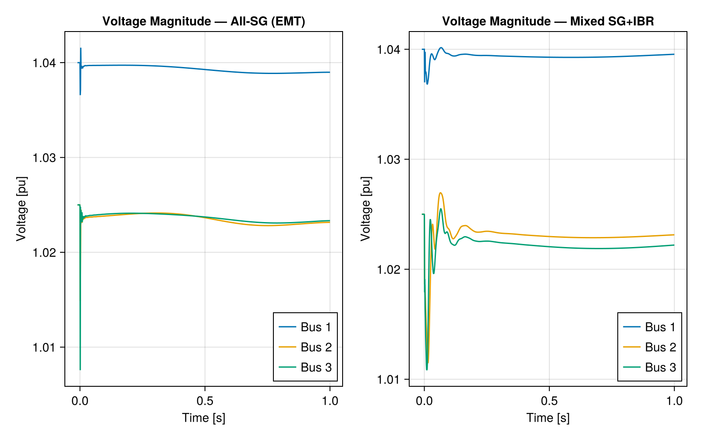
Effect of Grid Weakness
Increasing Zscale (scaling all non-transformer line impedances) weakens the grid. The mixed system develops visible oscillations at ~28 Hz as the converter-filter resonance mode loses damping.
function plot_load_step_comparison(scales; kwargs...)
s0s = [rebuild_with_scale(s0_mix, s)[2] for s in scales]
sols = [solve(make_load_step_problem(s0; kwargs...), Rodas5P()) for s0 in s0s]
fig = Figure(size=theme_size(800, length(scales) * 250))
for (row, (s, sol)) in enumerate(zip(scales, sols))
ax = Axis(fig[row, 1]; ylabel="Voltage [pu]", title=L"$Z$ scale = %$s")
if row == length(s0s)
ax.xlabel = "Time [s]"
else
hidexdecorations!(ax; label=true, ticklabels=false, ticks=false, grid=false, minorgrid=false, minorticks=false)
end
ts = refine_timeseries(sol.t)
for (i, label) in zip([1, 2, 3], ["Bus 1: SG", "Bus 2: GFM", "Bus 3: GFL"])
lines!(ax, ts, sol(ts, idxs=VIndex(i, :busbar₊u_mag)).u;
label, color=Cycled(i))
end
xlims!(ax, -0.01, 0.5)
row == 1 && axislegend(ax; position=:rc)
end
fig
end
plot_load_step_comparison([1.0, 1.5, 2.0])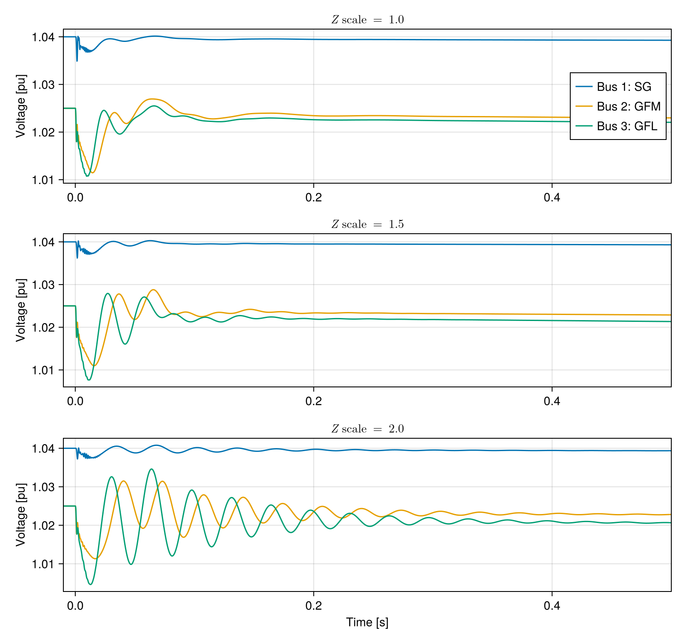
Export PDF for paper (IEEE theme)
let
fig = with_theme(ieee_theme(0.85)) do
plot_load_step_comparison([1.0, 1.5, 2.0])
end
save(joinpath(FIGPATH, "01_load_step_scenarios.pdf"), fig; pt_per_unit=1)
fig
end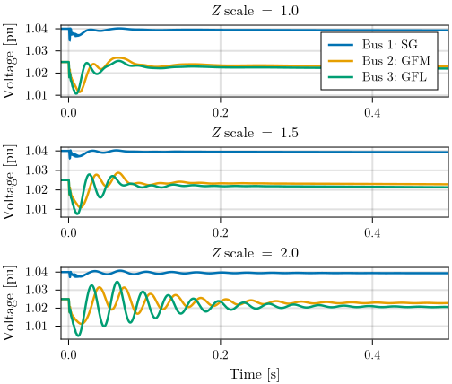
Eigenvalue Analysis: Impedance Sweep
We compute eigenvalues across a range of Zscale values from 0.1 (very strong grid) to 4.0 (very weak grid) and track how each mode migrates in the complex plane.
function match_eigenvalues(ref_eigs, new_eigs)
n = length(ref_eigs)
matched = zeros(ComplexF64, n)
available = collect(1:n)
for i in 1:n
dists = abs.(ref_eigs[i] .- new_eigs[available])
best = argmin(dists)
matched[i] = new_eigs[available[best]]
deleteat!(available, best)
end
matched
end
function find_tracks(states::OrderedDict{Float64})
key_vals = collect(keys(states))
eig_data = [jacobian_eigenvals(s) ./ (2π) for s in values(states)]
n_eigs = length(first(eig_data))
baseline_idx = argmin(abs.(key_vals .- 1.0))
baseline_order = sortperm(eig_data[baseline_idx]; by=x -> (real(x), imag(x)))
tracks = Matrix{ComplexF64}(undef, n_eigs, length(key_vals))
tracks[:, baseline_idx] = eig_data[baseline_idx][baseline_order]
for j in (baseline_idx+1):length(key_vals)
tracks[:, j] = match_eigenvalues(tracks[:, j-1], eig_data[j])
end
for j in (baseline_idx-1):-1:1
tracks[:, j] = match_eigenvalues(tracks[:, j+1], eig_data[j])
end
tracks
end
scales_sweep = sort!(unique!(vcat(range(0.1, 1.0; length=25), range(1.0, 4.0; length=25))))
eigenvalue_data = let d = OrderedDict{Float64, NWState}()
for Zscale in scales_sweep
_, s0 = rebuild_with_scale(s0_mix, Zscale)
d[Zscale] = s0
end
d
end
tracks = find_tracks(eigenvalue_data)
scales_vec = collect(keys(eigenvalue_data))Eigenvalue Trajectory Plot
Colours encode the impedance scaling (blue = strong grid, red = weak grid). Black crosses mark the baseline (Zscale = 1.0). We highlight two modes:
- Mode 54/55: coupled converter-filter resonance — migrates toward instability
- Mode 72: SG electromechanical mode — also loses damping but is secondary
function plot_tracks(tracks, key_vals;
ax=nothing,
highlight_modes=Int[], xlims=nothing, ylims=nothing, title="Eigenvalues",
colorbar=true, faint=false)
log_keys = log.(key_vals)
pos_max = max(maximum(log_keys), 0.0)
neg_max = max(-minimum(log_keys), 0.0)
norm_colors = map(l -> l >= 0 ? (iszero(pos_max) ? 0.0 : l / pos_max)
: (iszero(neg_max) ? 0.0 : l / neg_max), log_keys)
color_low = neg_max > 0 ? -1.0 : 0.0
faintscheme = Makie.ColorScheme([colorant"darkgray", colorant"gray95", colorant"darkgray"])
basecmap = faint ? faintscheme : :bluesreds
pos_only_cmap = Makie.resample_cmap(basecmap, 256)[129:end]
track_cmap = neg_max > 0 ? basecmap : pos_only_cmap
baseline_idx = argmin(abs.(key_vals .- 1.0))
own_fig = isnothing(ax)
if own_fig
fig = Figure(size=theme_size(800, 700))
ax = Axis(fig[1, 1]; xlabel="Real Part [Hz]", ylabel="Imaginary Part [Hz]", title)
end
faint || vspan!(ax, 0, 100; color=(:red, 0.07))
for m in highlight_modes
lines!(ax, real.(tracks[m, :]), imag.(tracks[m, :]);
color=:yellow,
alpha=0.3,
linewidth=6,
joinstyle=:round,
linecap=:round,
)
end
for i in axes(tracks, 1)
lines!(ax, real.(tracks[i, :]), imag.(tracks[i, :]);
color=norm_colors,
colorrange=(color_low, 1.0),
colormap=track_cmap,
linewidth= faint ? 1 : 2,
joinstyle=:round,
linecap=:round,
)
end
scatter!(ax, real.(tracks[:, baseline_idx]), imag.(tracks[:, baseline_idx]);
color=faint ? :darkgray : :black,
markersize=4, marker=:xcross)
!isnothing(xlims) && Makie.xlims!(ax, xlims...)
!isnothing(ylims) && Makie.ylims!(ax, ylims...)
if own_fig
if colorbar && (pos_max > 0 || neg_max > 0)
kmin, kmax = minimum(key_vals), maximum(key_vals)
cb_low = neg_max > 0 ? -1.0 : 0.0
cb_high = pos_max > 0 ? 1.0 : 0.0
cb_ticks = filter(t -> cb_low <= t[1] <= cb_high, [
(-1.0, string(kmin)), (0.0, "1.0"), (1.0, string(kmax))])
Colorbar(fig[1, 2]; colormap=track_cmap, colorrange=(cb_low, cb_high),
ticks=(first.(cb_ticks), last.(cb_ticks)),
width=4, vertical=true)
end
return fig
end
ax
end
xlims_full = (-50, 5)
ylims_full = (-110, 110)
xlims_zoom = (-5, 5/10)
ylims_zoom = (-5, 5)
plot_tracks(tracks, scales_vec;
highlight_modes=[54, 55],
xlims=xlims_full,
ylims=ylims_full,
title="Eigenvalue Paths under Varying Grid Strength"
)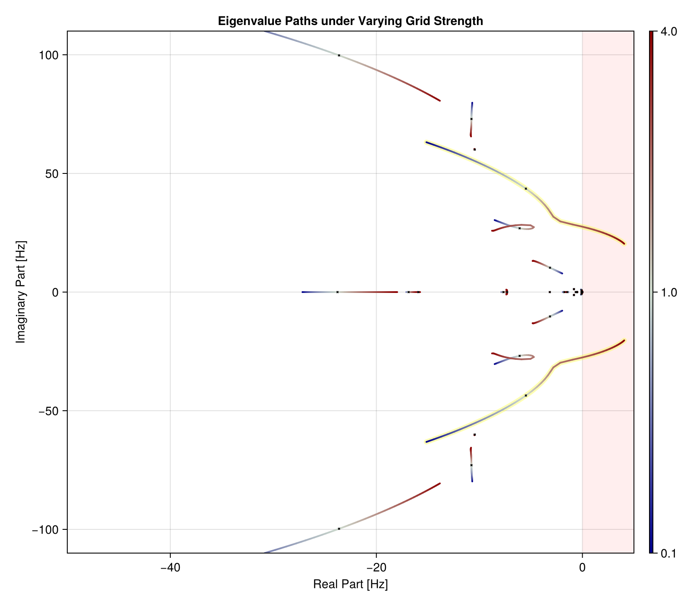
Export PDF for paper (IEEE theme)
let
fig = with_theme(ieee_theme(2/3)) do
plot_tracks(tracks, scales_vec;
xlims=xlims_full,
ylims=ylims_full,
title="Eigenvalue Paths under Varying Grid Strength"
)
end
save(joinpath(FIGPATH, "02_eigenvalue_paths.pdf"), fig; pt_per_unit=1)
fig
end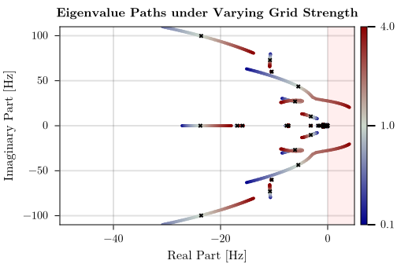
Identify the critical mode and the nominal / critical operating points used throughout.
Based on the matched eigenvalue tracks we can find the mode which crosses into instability first:
idx_last_stable = findlast(vec -> all(λ -> real(λ) < 1e-7, vec), eachcol(tracks))
scale_critical = scales_vec[idx_last_stable]
cmode_pair = findall(λ -> real(λ) > 1e-7, tracks[:, idx_last_stable+1])2-element Vector{Int64}:
54
55Those are the modes which dip into instability at the critical point. They are conugate pairs owe can take any of those:
cmode = first(cmode_pair)
critical_mode = tracks[cmode, idx_last_stable] # the critical mode just before instability-0.08080169430782994 - 27.635672325761504imThis is the index of the mode at nominal condition. We also need identify the mode index at the critical position:
s0_nom = eigenvalue_data[1.0] # get the state at nominal condition
_, s0_crit = rebuild_with_scale(s0_mix, scale_critical) # get the state at critical condition
idx_crit = findmin(λ -> abs(λ - critical_mode), jacobian_eigenvals(s0_crit) ./ (2π))[2]69This is now the index of the critical node at critical condition.
Impedance Extraction via Linearization
Using linearize_network, we extract the driving-point impedance at each bus by perturbing the bus current and observing the voltage response. The result is rotated into a local dq frame aligned with the steady-state voltage.
function compute_Z_aligned(s0, bus_idx)
G = NetworkDynamics.linearize_network(s0;
in = VIndex(bus_idx, [:busbar₊i_r, :busbar₊i_i]),
out = VIndex(bus_idx, [:busbar₊u_r, :busbar₊u_i]))
u_r = s0[VIndex(bus_idx, :busbar₊u_r)]
u_i = s0[VIndex(bus_idx, :busbar₊u_i)]
θ = atan(u_i, u_r)
R = [cos(θ) sin(θ); -sin(θ) cos(θ)]
B_rot = G.B * R'
C_rot = R * G.C
D_rot = R * G.D * R'
make = (row, col) -> NetworkDescriptorSystem(
A=G.A, B=B_rot[:, col], C=C_rot[row:row, :], D=D_rot[row:row, col:col],
insym=VIndex(bus_idx, :local), outsym=VIndex(bus_idx, :local))
(; Zdd=make(1,1), Zdq=make(1,2), Zqd=make(2,1), Zqq=make(2,2))
endBode Plots: Nominal vs Critical Grid Strength
The network is firmly inductive (R/X ≈ 0.12), so the dominant coupling channel is ΔP → Δδ, captured by Z_qd (q-voltage response to d-current perturbation). The sharp resonance peak at ~28 Hz (visible at critical Zscale) corresponds exactly to the eigenvalue mode that destabilizes. At nominal grid strength, the same mode is well-damped and barely visible.
function plot_Zqd_bode(s0_a, s0_b; buses=[2,3],
labels=["GFM Bus", "GFL Bus"],
label_suffix=["nominal", "critical"])
fs = 10 .^ range(-1.5, 3.5; length=800)
jωs = 2π .* fs .* im
fig = Figure(size=theme_size(800, 500))
ax_g = Axis(fig[1, 1]; ylabel="Gain (dB)", xscale=log10, title=L"$Z_{qd}$ Bode Plot")
phaseticks = (-10:2:10)*π
phaselabels = [n==0 ? "0" : string(n) .* "π" for n in -10:2:10]
ax_p = Axis(fig[2, 1]; ylabel="Phase (rad)", xlabel="Frequency (Hz)", xscale=log10,
yticks=(phaseticks, phaselabels),
)
for (i, (bus, lab)) in enumerate(zip(buses, labels))
Za = compute_Z_aligned(s0_a, bus)
Zb = compute_Z_aligned(s0_b, bus)
lines!(ax_g, fs, [20log10(abs(Za.Zqd(s))) for s in jωs];
label="$lab ($(label_suffix[1]))", color=Cycled(i), alpha=0.6)
lines!(ax_g, fs, [20log10(abs(Zb.Zqd(s))) for s in jωs];
label="$lab ($(label_suffix[2]))", color=Cycled(i), linestyle=(:dash, :dense))
lines!(ax_p, fs, unwrap_rad([angle(Za.Zqd(s)) for s in jωs]);
label="$lab ($(label_suffix[1]))", color=Cycled(i), alpha=0.6)
lines!(ax_p, fs, unwrap_rad([angle(Zb.Zqd(s)) for s in jωs]);
label="$lab ($(label_suffix[2]))", color=Cycled(i), linestyle=(:dash, :dense))
end
xlims!(ax_p, extrema(fs))
xlims!(ax_g, extrema(fs))
axislegend(ax_p; position=:lb)
fig
end
plot_Zqd_bode(s0_nom, s0_crit)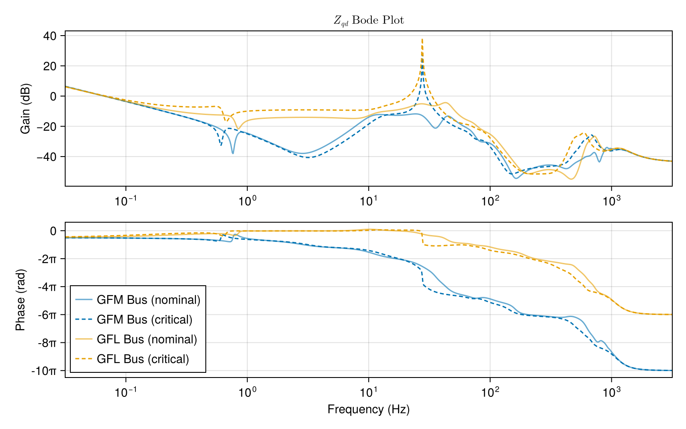
Export PDF for paper (IEEE theme)
let
fig = with_theme(ieee_theme()) do
plot_Zqd_bode(s0_nom, s0_crit)
end
save(joinpath(FIGPATH, "03_Zqd_bode.pdf"), fig; pt_per_unit=1)
fig
end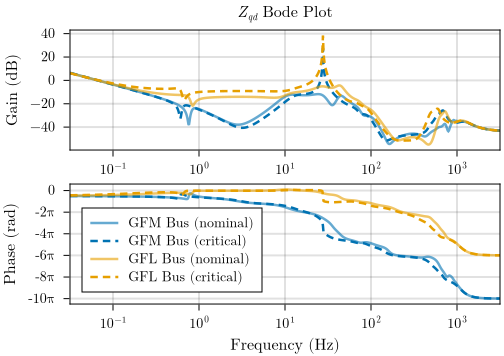
Cross-Validation: Is This Truly an Inverter-Inverter Interaction?
We check whether the resonance appears with only one inverter present. It does not — confirming a coupled interaction between the GFM and GFL mediated by the network.
First: Simulation with just the GFL at Bus 3. Resonanze is absent.
let
s0_gfl_only = load_ieee9bus_emt(; gfm=false, gfl=true, Zscale=1.0, verbose=false)[2]
s0_gfl_crit = load_ieee9bus_emt(; gfm=false, gfl=true, Zscale=scale_critical, verbose=false)[2]
plot_Zqd_bode(s0_gfl_only, s0_gfl_crit;
buses=[1,2,3],
labels=["SG Bus 1", "SG Bus 2", "GFL Bus"])
end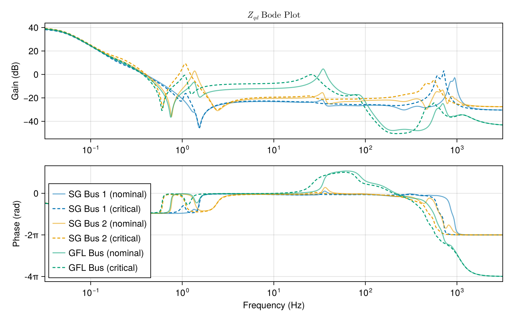
Second: Simulation with just the GFM at Bus 2. Resonance is absent.
let
s0_gfm_only = load_ieee9bus_emt(; gfm=true, gfl=false, Zscale=1.0, verbose=false)[2]
s0_gfm_crit = load_ieee9bus_emt(; gfm=true, gfl=false, Zscale=scale_critical, verbose=false)[2]
plot_Zqd_bode(s0_gfm_only, s0_gfm_crit;
buses=[1,2,3],
labels=["SG Bus 1", "GFM Bus", "SG Bus 3"])
end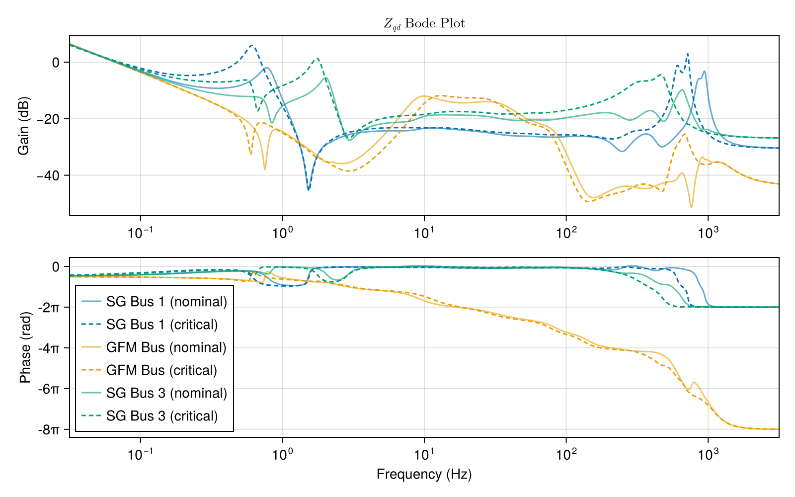
Participation Factors
At nominal grid strength, the critical mode (54/55) is dominated by the inner current controller integrator states of both inverters — a coupled filter resonance. Near instability, the GFL's PLL angle enters the participation, revealing the mechanism that drives destabilization.
let io = IOBuffer()
println(io, "### Participation Factors — Before Optimization ###")
println(io)
println(io, "=== Nominal grid strength (Zscale=1.0) ===")
show_participation_factors(io, s0_nom; modes=[cmode], threshold=0.05)
println(io)
println(io, "=== Near instability (Zscale=$scale_critical) ===")
show_participation_factors(io, s0_crit; modes=idx_crit, threshold=0.05)
str = String(take!(io))
print(stdout, str)
write(joinpath(FIGPATH, "p01_participation_factors_default.txt"), str)
end;### Participation Factors — Before Optimization ###
=== Nominal grid strength (Zscale=1.0) ===
Participation Factors:
Mode Real (Hz) Imag (Hz) Factor State
───────────────────────────────────────────────────────────────────
54 -5.486 -43.59 0.1429 VIndex(3, :gfl₊csrc₊cc1₊γ_d)
0.1323 VIndex(3, :gfl₊csrc₊cc1₊γ_q)
0.116 VIndex(2, :gfm₊vsrc₊cc1₊γ_q)
0.1039 VIndex(2, :gfm₊vsrc₊cc1₊γ_d)
0.09532 VIndex(3, :gfl₊csrc₊pll₊δ_pll)
=== Near instability (Zscale=2.25) ===
Participation Factors:
Mode Real (Hz) Imag (Hz) Factor State
───────────────────────────────────────────────────────────────────
69 -0.0808 -27.64 0.1552 VIndex(3, :gfl₊csrc₊cc1₊γ_d)
0.1443 VIndex(3, :gfl₊csrc₊cc1₊γ_q)
0.1277 VIndex(3, :gfl₊csrc₊pll₊δ_pll)
0.08483 VIndex(2, :gfm₊vsrc₊cc1₊γ_q)
0.05858 VIndex(2, :gfm₊vsrc₊vc₊γ_q)
0.05536 VIndex(2, :gfm₊vsrc₊cc1₊γ_d)
0.05145 VIndex(3, :gfl₊csrc₊vc₊γ_q)Eigenvalue Sensitivity
We compute the sensitivity of the critical mode to all controller parameters of the GFM (bus 2) and GFL (bus 3) inverters. The ranking shifts significantly between nominal and weak-grid conditions.
params_of_interest = let
candidates = vidxs(s0_nom, 2:3, s=false, p=true, in=false, out=false, obs=false)
filter!(candidates) do idx
name = string(idx.subidx)
!(
contains(name, "connected") ||
contains(name, r"Lf$") ||
contains(name, r"Rf$") ||
contains(name, r"C$") ||
contains(name, r"Lg$") ||
contains(name, r"Rg$") ||
contains(name, r"ω0$")
)
end
end
let io = IOBuffer()
println(io, "### Eigenvalue Sensitivities — Before Optimization ###")
println(io)
println(io, "=== Nominal grid strength (Zscale=1.0) ===")
show_eigenvalue_sensitivity(io, s0_nom, cmode; params=params_of_interest, sortby=:realmag)
println(io)
println(io, "=== Near instability (Zscale=$scale_critical) ===")
show_eigenvalue_sensitivity(io, s0_crit, idx_crit; params=params_of_interest, sortby=:realmag)
str = String(take!(io))
print(stdout, str)
write(joinpath(FIGPATH, "p02_sensitivities_default.txt"), str)
end;┌ Warning: The supplied DiffCache was too small and was enlarged. This incurs allocations
│ on the first call to `get_tmp`. If few calls to `get_tmp` occur and optimal performance is essential,
│ consider changing 'N'/chunk size of this DiffCache to 23.
└ @ PreallocationTools ~/.julia/packages/PreallocationTools/K2Foo/src/PreallocationTools.jl:204
### Eigenvalue Sensitivities — Before Optimization ###
=== Nominal grid strength (Zscale=1.0) ===
Eigenvalue Sensitivity for mode 54: λ = -5.486 ± 43.59j Hz
Parameter Value Real (Hz) Imag (Hz) |p·∂λ/∂p| (Hz) ∠ (deg)
───────────────────────────────────────────────────────────────────────────────────────
VIndex(3, :gfl₊csrc₊CC1_KI) 63 16.29 -17.69 24.05 -47.37
VIndex(2, :gfm₊vsrc₊CC1_KI) 63 -12.91 -9.007 15.74 -145.1
VIndex(3, :gfl₊csrc₊PLL_Kp) 250 5.443 -4.197 6.873 -37.64
VIndex(3, :gfl₊csrc₊CC1_KP) 0.063 -5.1 -1.634 5.356 -162.2
VIndex(3, :gfl₊csrc₊VC_KI) 317.4 4.596 0.2197 4.601 2.737
VIndex(3, :gfl₊csrc₊CC2_F) 1 4.119 4.542 6.131 47.79
VIndex(2, :gfm₊vsrc₊VC_KI) 317.4 -3.997 -1.134 4.155 -164.2
VIndex(3, :gfl₊csrc₊CC2_KP) 0.189 3.851 -3.011 4.888 -38.02
VIndex(2, :gfm₊vsrc₊CC1_KP) 0.063 -2.022 3.846 4.345 117.7
VIndex(2, :gfm₊vsrc₊VC_Fcoupl) 1 -1.797 -0.2799 1.819 -171.1
VIndex(2, :gfm₊vsrc₊VC_KP) 0.952 -0.518 3.4 3.439 98.66
VIndex(2, :gfm₊vsrc₊CC1_Fcoupl) 1 -0.2271 -0.2587 0.3443 -131.3
VIndex(3, :gfl₊csrc₊VC_KP) 0.952 -0.214 -3.475 3.481 -93.52
VIndex(3, :gfl₊cp_outer₊Pset) 0.85 0.2016 -0.1597 0.2572 -38.38
VIndex(3, :gfl₊csrc₊CC2_Fcoupl) 1 0.09488 0.1331 0.1634 54.51
VIndex(3, :gfl₊csrc₊PLL_Ki) 1000 0.05049 0.08585 0.0996 59.54
VIndex(3, :gfl₊cp_outer₊Qset) -0.1086 -0.04024 -0.03568 0.05378 -138.4
VIndex(3, :gfl₊csrc₊CC2_KI) 0.63 0.03407 0.05022 0.06069 55.85
=== Near instability (Zscale=2.25) ===
Eigenvalue Sensitivity for mode 69: λ = -0.0808 ± 27.64j Hz
Parameter Value Real (Hz) Imag (Hz) |p·∂λ/∂p| (Hz) ∠ (deg)
────────────────────────────────────────────────────────────────────────────────────────
VIndex(3, :gfl₊csrc₊CC2_F) 1 17.47 6.219 18.54 19.59
VIndex(3, :gfl₊csrc₊VC_KI) 317.4 6.543 -6.471 9.202 -44.68
VIndex(3, :gfl₊csrc₊CC1_KI) 63 4.811 -34.37 34.71 -82.03
VIndex(3, :gfl₊csrc₊CC1_KP) 0.063 -4.018 1.364 4.243 161.3
VIndex(2, :gfm₊vsrc₊VC_KP) 0.952 3.747 -1.633 4.088 -23.54
VIndex(2, :gfm₊vsrc₊VC_KI) 317.4 3.114 7.204 7.849 66.63
VIndex(3, :gfl₊csrc₊VC_KP) 0.952 -3.082 -3.075 4.354 -135.1
VIndex(3, :gfl₊csrc₊CC2_KP) 0.189 2.703 -8.555 8.972 -72.47
VIndex(3, :gfl₊csrc₊VC_Fcoupl) 1 -2.605 -3.873 4.668 -123.9
VIndex(2, :gfm₊vsrc₊CC1_KP) 0.063 1.973 -0.1316 1.978 -3.815
VIndex(3, :gfl₊csrc₊PLL_Kp) 250 1.156 -10.53 10.6 -83.74
VIndex(2, :gfm₊vsrc₊VC_Fcoupl) 1 0.769 2.011 2.153 69.07
VIndex(2, :gfm₊vsrc₊CC1_KI) 63 0.7247 11.37 11.39 86.35
VIndex(3, :gfl₊csrc₊CC2_Fcoupl) 1 0.2578 0.1161 0.2828 24.25
VIndex(3, :gfl₊csrc₊CC1_Fcoupl) 1 -0.246 -0.2047 0.32 -140.2
VIndex(3, :gfl₊csrc₊PLL_Ki) 1000 0.2426 0.02734 0.2441 6.429
VIndex(3, :gfl₊cp_outer₊Pset) 0.85 0.2037 -0.6736 0.7038 -73.17
VIndex(3, :gfl₊csrc₊CC2_KI) 0.63 0.17 0.04694 0.1764 15.44
VIndex(2, :gfm₊vsrc₊CC1_Fcoupl) 1 -0.1101 0.04821 0.1202 156.3
VIndex(3, :gfl₊cp_outer₊Qset) -0.02683 -0.0515 0.00197 0.05154 177.8
VIndex(2, :gfm₊droop₊τ_q) 0.1 0.03252 0.00556 0.03299 9.701
VIndex(2, :gfm₊droop₊Kq) 0.04 -0.03219 -0.007431 0.03304 -167Gradient-Based Controller Optimization
We optimize 7 GFL controller parameters to minimize voltage oscillation energy after a load step, evaluated at three grid strengths simultaneously. The gradients are computed via forward-mode AD through the ODE solver.
tunable_p = collect(VIndex(3, [
:gfl₊csrc₊PLL_Kp,
:gfl₊csrc₊PLL_Ki,
:gfl₊csrc₊CC1_KI,
:gfl₊csrc₊CC1_KP,
:gfl₊csrc₊CC2_F,
:gfl₊csrc₊CC2_KP,
:gfl₊csrc₊CC2_KI,
]))Loss Function
For each grid strength scenario, we simulate a 10% load increase at Bus 8 and measure the squared voltage deviation from the post-disturbance steady state at buses 2, 3, and 8. This penalizes oscillations (poor damping) while being insensitive to the steady-state shift caused by the load change.
opt_scales = [1.0, 1.5, 2.0]
opt_s0s = [load_ieee9bus_emt(; gfm=true, gfl=true, Zscale=s, verbose=false)[2] for s in opt_scales];
opt_problems = [make_load_step_problem(s0; tspan=(-10.0, 1.0)) for s0 in opt_s0s];
tpidx = SII.parameter_index(extract_nw(first(opt_s0s)), tunable_p)
function generate_loss(problems, tpidx)
t_eval = range(0.0, 1.0; length=1000)
pdim_nw = NetworkDynamics.pdim(extract_nw(first(problems)))
loss = p -> begin
total = 0.0
for prob in problems
p_new = zeros(eltype(p), pdim_nw)
p_new .= prob.p
p_new[tpidx] .= p
sol = solve(prob, Rodas5P(autodiff=true); p=p_new, saveat=t_eval)
!SciMLBase.successful_retcode(sol) && return Inf
all_V = reduce(hcat, sol(t_eval; idxs=VIndex([2, 3, 8], :busbar₊u_mag)).u)
for col in 1:3
V_t = all_V[col, :]
total += sum((V_t .- V_t[end]).^2) / length(t_eval)
end
end
total
end
p0 = first(problems).p[tpidx]
loss, p0
end
loss_fn, p0_opt = generate_loss(opt_problems, tpidx);Run Optimization
Adam optimizer for up to 100 iterations (5 in fast-build mode). The slower descent gives better convergence and also produces smooth eigenvalue trajectory frames for the animation below.
optsol, opt_states = let states = Any[]
optf = Optimization.OptimizationFunction((x, _) -> loss_fn(x), Optimization.AutoForwardDiff())
cb = (state, l) -> begin
push!(states, state)
is_best = all(s -> l < s.objective, states[1:end-1])
print("Iteration $(state.iter): loss = $l")
is_best && printstyled(" ✓"; color=:green)
println()
false
end
optprob = Optimization.OptimizationProblem(optf, p0_opt; callback=cb)
sol = @time Optimization.solve(optprob, Optimisers.Adam(5e-3); maxiters=100)
best = Inf
frames = filter(states) do s
s.objective < best ? (best = s.objective; true) : false
end
sol, frames
end┌ Warning: The supplied DiffCache was too small and was enlarged. This incurs allocations
│ on the first call to `get_tmp`. If few calls to `get_tmp` occur and optimal performance is essential,
│ consider changing 'N'/chunk size of this DiffCache to 15.
└ @ PreallocationTools ~/.julia/packages/PreallocationTools/K2Foo/src/PreallocationTools.jl:204
Iteration 1: loss = 3.153875416728972e-5 ✓
Iteration 2: loss = 2.8047600361781625e-5 ✓
Iteration 3: loss = 2.6023048554081265e-5 ✓
Iteration 4: loss = 2.4666947849174532e-5 ✓
Iteration 5: loss = 2.3684996858916633e-5 ✓
Iteration 6: loss = 2.292144580747072e-5 ✓
Iteration 7: loss = 2.230506903536908e-5 ✓
Iteration 8: loss = 2.1799756859983756e-5 ✓
Iteration 9: loss = 2.1365271548086446e-5 ✓
Iteration 10: loss = 2.0987514139555864e-5 ✓
Iteration 11: loss = 2.0660487138529627e-5 ✓
Iteration 12: loss = 2.0368623230375184e-5 ✓
Iteration 13: loss = 2.010928936327942e-5 ✓
Iteration 14: loss = 1.987343764625194e-5 ✓
Iteration 15: loss = 1.9658968575318424e-5 ✓
Iteration 16: loss = 1.9464528847459113e-5 ✓
Iteration 17: loss = 1.928550547563169e-5 ✓
Iteration 18: loss = 1.9112092739557444e-5 ✓
Iteration 19: loss = 1.8958876158022497e-5 ✓
Iteration 20: loss = 1.8813589108314e-5 ✓
Iteration 21: loss = 1.867699585941611e-5 ✓
Iteration 22: loss = 1.8551098648638146e-5 ✓
Iteration 23: loss = 1.8427641993008835e-5 ✓
Iteration 24: loss = 1.831702933756514e-5 ✓
Iteration 25: loss = 1.8203363303990192e-5 ✓
Iteration 26: loss = 1.8100940195565763e-5 ✓
Iteration 27: loss = 1.8011975794338585e-5 ✓
Iteration 28: loss = 1.7916514961448127e-5 ✓
Iteration 29: loss = 1.782330812725108e-5 ✓
Iteration 30: loss = 1.7735710139760993e-5 ✓
Iteration 31: loss = 1.7652989220237035e-5 ✓
Iteration 32: loss = 1.7575062687681645e-5 ✓
Iteration 33: loss = 1.7505455388845173e-5 ✓
Iteration 34: loss = 1.741910193936706e-5 ✓
Iteration 35: loss = 1.7346590296854982e-5 ✓
Iteration 36: loss = 1.7280331145295135e-5 ✓
Iteration 37: loss = 1.720980604827306e-5 ✓
Iteration 38: loss = 1.715257324634012e-5 ✓
Iteration 39: loss = 1.708161844078946e-5 ✓
Iteration 40: loss = 1.7020458927990516e-5 ✓
Iteration 41: loss = 1.696214684850239e-5 ✓
Iteration 42: loss = 1.6904302990187904e-5 ✓
Iteration 43: loss = 1.684844723699749e-5 ✓
Iteration 44: loss = 1.6791895828153908e-5 ✓
Iteration 45: loss = 1.6743448378079835e-5 ✓
Iteration 46: loss = 1.668529629593249e-5 ✓
Iteration 47: loss = 1.663674025108447e-5 ✓
Iteration 48: loss = 1.6585458948488027e-5 ✓
Iteration 49: loss = 1.6533068454139264e-5 ✓
Iteration 50: loss = 1.647841922966663e-5 ✓
Iteration 51: loss = 1.6434631897101822e-5 ✓
Iteration 52: loss = 1.6388583831219236e-5 ✓
Iteration 53: loss = 1.63411692073913e-5 ✓
Iteration 54: loss = 1.628887728578396e-5 ✓
Iteration 55: loss = 1.6257389119740434e-5 ✓
Iteration 56: loss = 1.6209600334e-5 ✓
Iteration 57: loss = 1.6164374595248985e-5 ✓
Iteration 58: loss = 1.6121061486624057e-5 ✓
Iteration 59: loss = 1.608646664023056e-5 ✓
Iteration 60: loss = 1.6042386845952796e-5 ✓
Iteration 61: loss = 1.6002448807656302e-5 ✓
Iteration 62: loss = 1.595992960860603e-5 ✓
Iteration 63: loss = 1.5923340760404984e-5 ✓
Iteration 64: loss = 1.5877152798090692e-5 ✓
Iteration 65: loss = 1.5841214595915293e-5 ✓
Iteration 66: loss = 1.5805888211623045e-5 ✓
Iteration 67: loss = 1.5769523325356887e-5 ✓
Iteration 68: loss = 1.5735589036949063e-5 ✓
Iteration 69: loss = 1.5691982378114785e-5 ✓
Iteration 70: loss = 1.5658830069088583e-5 ✓
Iteration 71: loss = 1.562448446580417e-5 ✓
Iteration 72: loss = 1.5593519299234708e-5 ✓
Iteration 73: loss = 1.5554489380632725e-5 ✓
Iteration 74: loss = 1.551960852185252e-5 ✓
Iteration 75: loss = 1.548679417667346e-5 ✓
Iteration 76: loss = 1.5449715955666403e-5 ✓
Iteration 77: loss = 1.541958437661376e-5 ✓
Iteration 78: loss = 1.5382834508977505e-5 ✓
Iteration 79: loss = 1.5352298900812658e-5 ✓
Iteration 80: loss = 1.5314488137073466e-5 ✓
Iteration 81: loss = 1.5285417662702617e-5 ✓
Iteration 82: loss = 1.5254136913316018e-5 ✓
Iteration 83: loss = 1.5225822665814481e-5 ✓
Iteration 84: loss = 1.5190691605074871e-5 ✓
Iteration 85: loss = 1.5160519867158789e-5 ✓
Iteration 86: loss = 1.5127770530187726e-5 ✓
Iteration 87: loss = 1.5092887873333327e-5 ✓
Iteration 88: loss = 1.5059968234634714e-5 ✓
Iteration 89: loss = 1.502018841236714e-5 ✓
Iteration 90: loss = 1.4991375803038944e-5 ✓
Iteration 91: loss = 1.4958597130260197e-5 ✓
Iteration 92: loss = 1.4925289390045774e-5 ✓
Iteration 93: loss = 1.4889284897405711e-5 ✓
Iteration 94: loss = 1.4852099808966697e-5 ✓
Iteration 95: loss = 1.4827648469066432e-5 ✓
Iteration 96: loss = 1.4782420986682033e-5 ✓
Iteration 97: loss = 1.4747825200139011e-5 ✓
Iteration 98: loss = 1.4716623369440503e-5 ✓
Iteration 99: loss = 1.4666468059326762e-5 ✓
Iteration 100: loss = 1.4619798660936288e-5 ✓
Iteration 100: loss = 1.4619798660936288e-5
150.195806 seconds (78.00 M allocations: 9.674 GiB, 2.22% gc time, 22.75% compilation time)Optimized Parameters
The optimization reveals that the inner current loop proportional gain (CC1_KP) needed a large increase, while the outer current loop gain (CC2_KP) and grid voltage feedforward (CC2_F) needed reduction. The PLL and CC1 integral gains were already near-optimal.
let io = IOBuffer()
println(io, "symbol\toriginal\ttuned\tchange")
for (sym, orig, tuned) in zip(tunable_p, p0_opt, optsol.u)
pct = round(100 * (tuned - orig) / orig; digits=1)
println(io, "$sym\t$orig\t$(round(tuned; sigdigits=4))\t$pct%")
end
str = String(take!(io))
write(joinpath(FIGPATH, "p05_tuned_parameters.txt"), str)
print(stdout, str)
end;symbol original tuned change
VIndex(3, :gfl₊csrc₊PLL_Kp) 250.0 250.1 0.1%
VIndex(3, :gfl₊csrc₊PLL_Ki) 1000.0 1000.0 -0.0%
VIndex(3, :gfl₊csrc₊CC1_KI) 63.0 63.15 0.2%
VIndex(3, :gfl₊csrc₊CC1_KP) 0.063 0.1977 213.7%
VIndex(3, :gfl₊csrc₊CC2_F) 1.0 0.7617 -23.8%
VIndex(3, :gfl₊csrc₊CC2_KP) 0.189 0.2306 22.0%
VIndex(3, :gfl₊csrc₊CC2_KI) 0.63 0.149 -76.4%Before/After Comparison: Time Domain
We compare the load step response with default vs optimized parameters at all three grid strengths. The oscillations at Zscale=2.0 are dramatically reduced.
sols_default = [solve(prob, Rodas5P()) for prob in opt_problems];
sols_optimized = let p_opt = optsol.u
map(opt_problems) do prob
p_new = copy(prob.p)
p_new[tpidx] .= p_opt
solve(prob, Rodas5P(); p=p_new)
end
end;
function plot_before_after(sols_before, sols_after, scales; buses=[2, 3, 8], labels=["GFM Bus", "GFL Bus", "Disturbed Load Bus"])
fig = Figure(size=theme_size(800, length(scales) * 250))
nrows = length(scales)
for (row, (s, sb, sa)) in enumerate(zip(scales, sols_before, sols_after))
ax1 = Axis(fig[row, 1]; title=L"$Z$ scale=%$s — default", ylabel="V [pu]")
ax2 = Axis(fig[row, 2]; title=L"$Z$ scale=%$s — optimized", ylabel="V [pu]")
if row == nrows
ax1.xlabel = "Time [s]"
ax2.xlabel = "Time [s]"
else
hidexdecorations!(ax1; label=true, ticklabels=false, ticks=false, grid=false, minorgrid=false, minorticks=false)
hidexdecorations!(ax2; label=true, ticklabels=false, ticks=false, grid=false, minorgrid=false, minorticks=false)
end
ts_b = refine_timeseries(sb.t)
ts_a = refine_timeseries(sa.t)
for (j, (bus, label)) in enumerate(zip(buses, labels))
lines!(ax1, ts_b, sb(ts_b, idxs=VIndex(bus, :busbar₊u_mag)).u;
color=Cycled(j), label)
lines!(ax2, ts_a, sa(ts_a, idxs=VIndex(bus, :busbar₊u_mag)).u;
color=Cycled(j), label)
end
xlms = (-0.01, 0.5)
ylms = (0.939, 1.035)
xlims!(ax1, xlms...); xlims!(ax2, xlms...)
ylims!(ax1, ylms...); ylims!(ax2, ylms...)
row == 1 && axislegend(ax1; position=:rb)
end
fig
end
plot_before_after(sols_default, sols_optimized, opt_scales)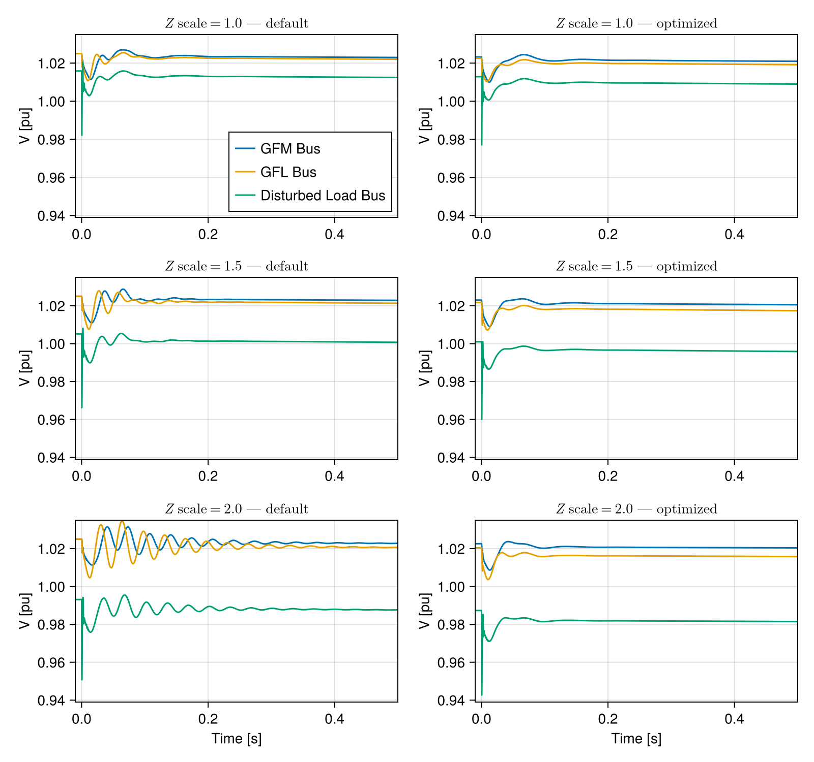
Export PDF for paper (IEEE theme)
let
fig = with_theme(ieee_theme_wide(3/7)) do
plot_before_after(sols_default, sols_optimized, opt_scales)
end
save(joinpath(FIGPATH, "04_load_step_before_after.pdf"), fig; pt_per_unit=1)
fig
end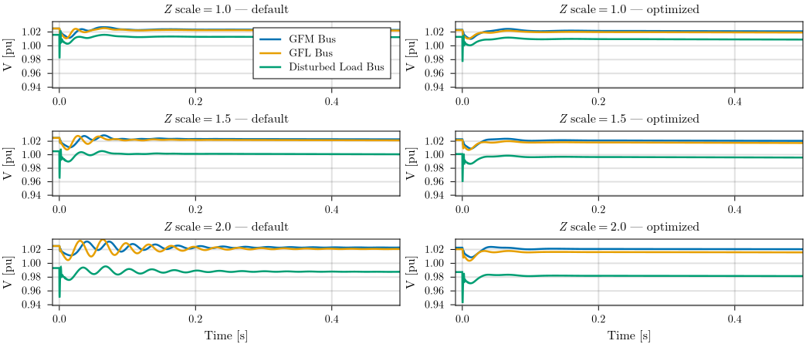
Before/After Comparison: Eigenvalue Trajectories
We recompute eigenvalues with optimized parameters at each grid strength and overlay them with the baseline. The critical mode should have moved left (more damping).
function reinitialize_with_params(s0, tunable_p, p_new)
_nw = extract_nw(s0)
nw = Network(_nw)
for (pidx, p) in zip(tunable_p, p_new)
set_default!(nw[VIndex(pidx.compidx)], pidx.subidx, p)
end
initialize_from_pf!(nw; tol=1e-7, nwtol=1e-5, verbose=false, warn=false)
endParticipation factors and sensitivity after optimization
let io = IOBuffer()
s0_nom_opt = reinitialize_with_params(s0_nom, tunable_p, optsol.u)
s0_crit_opt = reinitialize_with_params(s0_crit, tunable_p, optsol.u)
idx_crit_opt = findmin(λ -> abs(λ - critical_mode), jacobian_eigenvals(s0_crit_opt) ./ (2π))[2]
println(io, "### Participation Factors — After Optimization ###")
println(io)
println(io, "=== Nominal grid strength (Zscale=1.0) ===")
show_participation_factors(io, s0_nom_opt; modes=[cmode], threshold=0.05)
println(io)
println(io, "=== Near instability (Zscale=$scale_critical) ===")
show_participation_factors(io, s0_crit_opt; modes=idx_crit_opt, threshold=0.05)
str = String(take!(io))
print(stdout, str)
write(joinpath(FIGPATH, "p03_participation_factors_optimized.txt"), str)
end;### Participation Factors — After Optimization ###
=== Nominal grid strength (Zscale=1.0) ===
Participation Factors:
Mode Real (Hz) Imag (Hz) Factor State
───────────────────────────────────────────────────────────────────
54 -7.78 24.47 0.1411 VIndex(2, :gfm₊vsrc₊cc1₊γ_q)
0.1153 VIndex(3, :gfl₊csrc₊cc1₊γ_d)
0.1114 VIndex(2, :gfm₊vsrc₊cc1₊γ_d)
0.1005 VIndex(2, :gfm₊vsrc₊vc₊γ_q)
0.09098 VIndex(3, :gfl₊csrc₊cc1₊γ_q)
0.08546 VIndex(3, :gfl₊csrc₊pll₊δ_pll)
0.07893 VIndex(2, :gfm₊vsrc₊vc₊γ_d)
0.05307 VIndex(3, :gfl₊csrc₊vc₊γ_d)
=== Near instability (Zscale=2.25) ===
Participation Factors:
Mode Real (Hz) Imag (Hz) Factor State
───────────────────────────────────────────────────────────────────
54 -5.75 -22.76 0.1334 VIndex(2, :gfm₊vsrc₊cc1₊γ_q)
0.1274 VIndex(3, :gfl₊csrc₊cc1₊γ_d)
0.1167 VIndex(2, :gfm₊vsrc₊vc₊γ_q)
0.1022 VIndex(3, :gfl₊csrc₊cc1₊γ_q)
0.09461 VIndex(3, :gfl₊csrc₊pll₊δ_pll)
0.07644 VIndex(2, :gfm₊vsrc₊cc1₊γ_d)
0.06639 VIndex(2, :gfm₊vsrc₊vc₊γ_d)
0.06425 VIndex(3, :gfl₊csrc₊vc₊γ_d)let io = IOBuffer()
s0_nom_opt = reinitialize_with_params(s0_nom, tunable_p, optsol.u)
s0_crit_opt = reinitialize_with_params(s0_crit, tunable_p, optsol.u)
idx_crit_opt = findmin(λ -> abs(λ - critical_mode), jacobian_eigenvals(s0_crit_opt) ./ (2π))[2]
println(io, "### Eigenvalue Sensitivities — After Optimization ###")
println(io)
println(io, "=== Nominal grid strength (Zscale=1.0) ===")
show_eigenvalue_sensitivity(io, s0_nom_opt, cmode; params=params_of_interest, sortby=:realmag)
println(io)
println(io, "=== Near instability (Zscale=$scale_critical) ===")
show_eigenvalue_sensitivity(io, s0_crit_opt, idx_crit_opt; params=params_of_interest, sortby=:realmag)
str = String(take!(io))
print(stdout, str)
write(joinpath(FIGPATH, "p04_sensitivities_optimized.txt"), str)
end;┌ Warning: The supplied DiffCache was too small and was enlarged. This incurs allocations
│ on the first call to `get_tmp`. If few calls to `get_tmp` occur and optimal performance is essential,
│ consider changing 'N'/chunk size of this DiffCache to 23.
└ @ PreallocationTools ~/.julia/packages/PreallocationTools/K2Foo/src/PreallocationTools.jl:204
### Eigenvalue Sensitivities — After Optimization ###
=== Nominal grid strength (Zscale=1.0) ===
Eigenvalue Sensitivity for mode 54: λ = -7.78 ± 24.47j Hz
Parameter Value Real (Hz) Imag (Hz) |p·∂λ/∂p| (Hz) ∠ (deg)
───────────────────────────────────────────────────────────────────────────────────────
VIndex(3, :gfl₊csrc₊CC1_KI) 63.15 -4.04 8.166 9.11 116.3
VIndex(3, :gfl₊csrc₊CC2_F) 0.7617 3.23 1.267 3.47 21.42
VIndex(2, :gfm₊vsrc₊VC_KP) 0.952 -2.684 -0.0439 2.684 -179.1
VIndex(3, :gfl₊csrc₊PLL_Kp) 250.1 -1.864 1.933 2.686 134
VIndex(2, :gfm₊vsrc₊VC_KI) 317.4 1.594 5.313 5.547 73.3
VIndex(3, :gfl₊csrc₊VC_Fcoupl) 1 -1.38 0.04597 1.381 178.1
VIndex(3, :gfl₊csrc₊CC1_KP) 0.1977 -1.253 -2.837 3.101 -113.8
VIndex(2, :gfm₊vsrc₊CC1_KP) 0.063 -1.199 -0.3841 1.259 -162.2
VIndex(3, :gfl₊csrc₊VC_KP) 0.952 -1.138 -0.7354 1.355 -147.1
VIndex(3, :gfl₊csrc₊CC2_KP) 0.2306 -0.8452 2.118 2.28 111.8
VIndex(3, :gfl₊csrc₊VC_KI) 317.4 -0.7146 3.339 3.415 102.1
VIndex(3, :gfl₊cp_outer₊Pset) 0.85 -0.1452 0.3693 0.3968 111.5
VIndex(3, :gfl₊cp_outer₊Qset) -0.1086 -0.07002 -0.03707 0.07923 -152.1
VIndex(3, :gfl₊csrc₊CC1_Fcoupl) 1 -0.06612 -0.01882 0.06875 -164.1
VIndex(3, :gfl₊csrc₊PLL_Ki) 1000 0.05964 0.02952 0.06655 26.33
VIndex(3, :gfl₊csrc₊CC2_Fcoupl) 1 0.04828 0.01284 0.04996 14.89
VIndex(2, :gfm₊vsrc₊VC_Fcoupl) 1 -0.04703 1.416 1.417 91.9
VIndex(3, :gfl₊csrc₊CC2_KI) 0.149 0.03622 0.188 0.1915 79.1
VIndex(2, :gfm₊vsrc₊CC1_KI) 63 -0.01854 7.803 7.803 90.14
=== Near instability (Zscale=2.25) ===
Eigenvalue Sensitivity for mode 54: λ = -5.75 ± 22.76j Hz
Parameter Value Real (Hz) Imag (Hz) |p·∂λ/∂p| (Hz) ∠ (deg)
────────────────────────────────────────────────────────────────────────────────────────
VIndex(3, :gfl₊csrc₊CC1_KI) 63.15 -6.87 -9.619 11.82 -125.5
VIndex(3, :gfl₊csrc₊CC2_F) 0.7617 4.866 -2.999 5.716 -31.64
VIndex(2, :gfm₊vsrc₊VC_KI) 317.4 4.028 -4.997 6.419 -51.13
VIndex(2, :gfm₊vsrc₊CC1_KI) 63 3.371 -6.539 7.357 -62.72
VIndex(2, :gfm₊vsrc₊VC_KP) 0.952 -2.58 -1.186 2.84 -155.3
VIndex(3, :gfl₊csrc₊PLL_Kp) 250.1 -2.431 -2.317 3.359 -136.4
VIndex(3, :gfl₊csrc₊VC_KI) 317.4 -2.046 -4.18 4.654 -116.1
VIndex(3, :gfl₊csrc₊VC_Fcoupl) 1 -1.936 0.2541 1.952 172.5
VIndex(3, :gfl₊csrc₊CC2_KP) 0.2306 -1.633 -2.623 3.09 -121.9
VIndex(3, :gfl₊csrc₊VC_KP) 0.952 -1.176 1.233 1.704 133.6
VIndex(2, :gfm₊vsrc₊CC1_KP) 0.063 -1.057 -0.246 1.085 -166.9
VIndex(3, :gfl₊csrc₊CC1_KP) 0.1977 -0.8809 3.555 3.662 103.9
VIndex(2, :gfm₊vsrc₊VC_Fcoupl) 1 0.5592 -1.335 1.447 -67.27
VIndex(3, :gfl₊cp_outer₊Pset) 0.85 -0.2608 -0.393 0.4717 -123.6
VIndex(3, :gfl₊csrc₊PLL_Ki) 1000 0.07703 -0.04851 0.09103 -32.2
VIndex(3, :gfl₊csrc₊CC1_Fcoupl) 1 -0.0648 0.03741 0.07483 150
VIndex(3, :gfl₊csrc₊CC2_Fcoupl) 1 0.05978 -0.02756 0.06582 -24.75
VIndex(3, :gfl₊cp_outer₊Qset) -0.02683 -0.02332 0.0212 0.03152 137.7
VIndex(3, :gfl₊csrc₊CC2_KI) 0.149 0.02087 -0.2735 0.2743 -85.64# Pre-load base systems across the sweep once — reused for every eigenvalue_tracks call.
eig_sweep_scales = range(1.0, 4.0; length=25)
eig_sweep_s0s = [rebuild_with_scale(s0_mix, Float64(s))[2] for s in eig_sweep_scales];
"""
compute_eig_tracks(popt; scales, base_s0s) -> (tracks, scales_vec)
Reinitialize the mixed IEEE-9 system with controller parameters `popt` at each
`Zscale` in `scales` and return the matched eigenvalue track matrix together with
the corresponding scale vector. Separating computation from plotting lets callers
draw the same tracks onto multiple axes without redundant reinitialization.
"""
function compute_eig_tracks(popt;
scales = eig_sweep_scales,
base_s0s = eig_sweep_s0s)
states = OrderedDict{Float64, NWState}()
for (s, s0) in zip(scales, base_s0s)
states[Float64(s)] = reinitialize_with_params(s0, tunable_p, popt)
end
find_tracks(states), collect(keys(states))
end
tracks_default = compute_eig_tracks(p0_opt)
tracks_optimized = compute_eig_tracks(optsol.u)
function plot_optimized_tracks((tr_def, sv_def), (tr_opt, sv_opt);
ev_pairs=Pair{Int,Int}[], ev_pair_gap=0.02)
mask = sv_def .>= 1.0
fig = Figure(size=theme_size(600, 500))
ax = Axis(fig[1, 1]; xlabel="Real Part [Hz]", ylabel="Imaginary Part [Hz]",
title="Optimized EV Paths under Varying Grid Strength",
)
plot_tracks(tr_def[:, mask], sv_def[mask]; ax, faint=true)
plot_tracks(tr_opt, sv_opt; ax, xlims=xlims_full, ylims=ylims_full, colorbar=false)
if !isempty(ev_pairs)
baseline_def = argmin(abs.(sv_def .- 1.0))
baseline_opt = argmin(abs.(sv_opt .- 1.0))
Δx = xlims_full[2] - xlims_full[1]
Δy = ylims_full[2] - ylims_full[1]
for (i_old, i_new) in ev_pairs
old_ev = tr_def[i_old, baseline_def]
new_ev = tr_opt[i_new, baseline_opt]
diff = new_ev - old_ev
dir_n = complex(real(diff)/Δx, imag(diff)/Δy)
dir_n /= abs(dir_n)
offset = complex(ev_pair_gap * real(dir_n) * Δx, ev_pair_gap * imag(dir_n) * Δy)
start_ev = old_ev + offset
end_ev = new_ev - offset
for sign in (+1, -1)
arrows2d!(ax,
[(real(start_ev), sign * imag(start_ev))],
[(real(end_ev), sign * imag(end_ev))];
argmode=:endpoint, shaftwidth=1, tiplength=3, tipwidth=3)
end
end
end
log_keys = log.(sv_opt)
pos_max = max(maximum(log_keys), 0.0)
neg_max = max(-minimum(log_keys), 0.0)
kmin, kmax = minimum(sv_opt), maximum(sv_opt)
cb_low = neg_max > 0 ? -1.0 : 0.0
cb_high = pos_max > 0 ? 1.0 : 0.0
cb_ticks = filter(t -> cb_low <= t[1] <= cb_high, [
(-1.0, string(kmin)), (0.0, "1.0"), (1.0, string(kmax))])
pos_only_cmap = Makie.resample_cmap(:bluesreds, 256)[129:end]
cb_cmap = neg_max > 0 ? :bluesreds : pos_only_cmap
Colorbar(fig[1, 2]; colormap=cb_cmap, colorrange=(cb_low, cb_high),
ticks=(first.(cb_ticks), last.(cb_ticks)),
width=4, vertical=true)
fig
end
plot_optimized_tracks(tracks_default, tracks_optimized)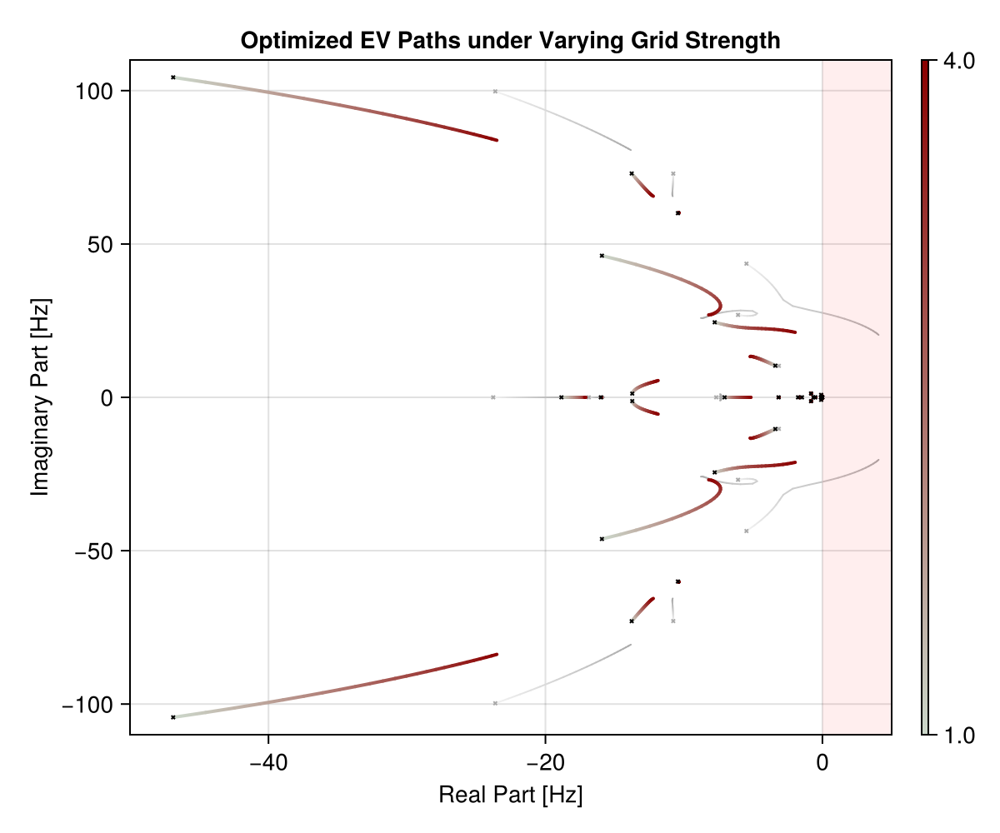
Export PDF for paper (IEEE theme)
let
fig = with_theme(ieee_theme(2/3)) do
plot_optimized_tracks(tracks_default, tracks_optimized)
end
save(joinpath(FIGPATH, "05_eigenvalue_tracks_before_after.pdf"), fig; pt_per_unit=1)
fig
end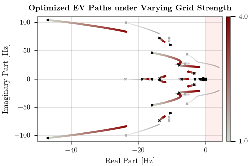
Validation: Previously Unstable Scenario
We test the optimized parameters at Zscale=2.25, which was unstable with default parameters. If the system is now stable, the optimization has extended the stability boundary.
function plot_strong_disturbance()
scale_def = 2.25
scale_opt = 4.0
ΔG_factor=1.3
tspan=(-1.0, 1.1)
s0_test = load_ieee9bus_emt(; gfm=true, gfl=true, Zscale=scale_def, verbose=false)[2]
prob_default = make_load_step_problem(s0_test; ΔG_factor, tspan)
s0_test_opt = load_ieee9bus_emt(; gfm=true, gfl=true, Zscale=scale_opt, verbose=false)[2]
s0_tuned = reinitialize_with_params(s0_test_opt, tunable_p, optsol.u)
prob_tuned = make_load_step_problem(s0_tuned; ΔG_factor, tspan)
sol_def = solve(prob_default, Rodas5P())
sol_tun = solve(prob_tuned, Rodas5P())
fig = Figure(size=theme_size(800, 500))
ax1 = Axis(fig[1, 1]; title=L"$Z$ scale=%$scale_def (default parameters)", ylabel="V [pu]")
ax2 = Axis(fig[2, 1]; title=L"$Z$ scale=%$scale_opt (optimized parameters)", xlabel="Time [s]", ylabel="V [pu]")
for (ax, sol) in [(ax1, sol_def), (ax2, sol_tun)]
ts = refine_timeseries(sol.t)
for (j, bus) in enumerate([2, 3, 8])
lines!(ax, ts, sol(ts, idxs=VIndex(bus, :busbar₊u_mag)).u;
color=Cycled(j), label="Bus $bus")
end
xlims!(ax, -0.1, sol.t[end])
end
axislegend(ax2; position=:rb)
fig
end
plot_strong_disturbance()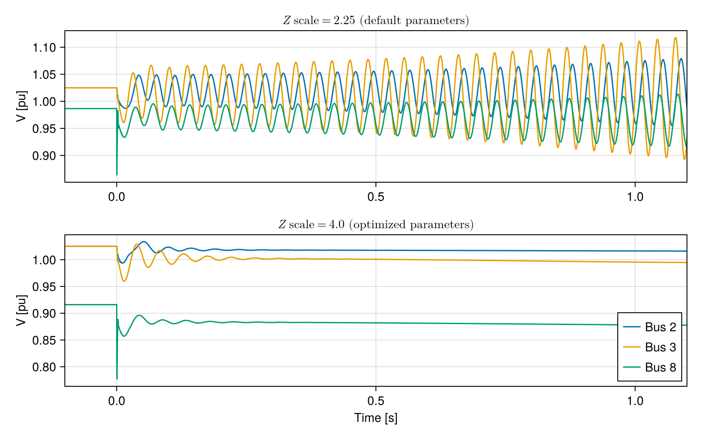
Export PDF for paper (IEEE theme)
let
fig = with_theme(ieee_theme(2/3)) do
plot_strong_disturbance()
end
save(joinpath(FIGPATH, "06_strong_disturbance_response.pdf"), fig; pt_per_unit=1)
fig
end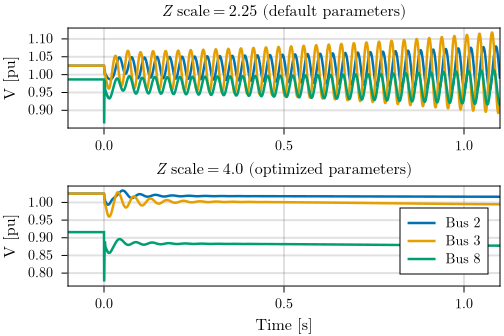
Eigenvalue Evolution Animation
Replay the optimisation trajectory: each frame corresponds to an improving iterate captured in opt_states (strictly monotone in loss), so the animation shows only the successful descent.
# Pre-compute tracks for every animation frame — expensive, done once.
anim_frames = let N = length(opt_states)
map(enumerate(opt_states)) do (i, s)
Base.isinteractive() && println("Computing tracks $i/$N (iter $(s.iter))...")
tracks, sv = compute_eig_tracks(s.u)
(; s, tracks, sv)
end
endAnimation: Voltage Response + Eigenvalue Tracks (Zscale=2.0)
LHS shows the load-step voltage response at the most challenging training scenario (Zscale=2.0); RHS shows the eigenvalue tracks — linking mode damping to the time-domain oscillations as parameters evolve.
let
prob = last(opt_problems)
fig = Figure(size=theme_size(900, 500))
ax_v = Axis(fig[1, 1]; xlabel="Time [s]", ylabel="Voltage [pu]")
ax_eig = Axis(fig[1, 2]; xlabel="Real [Hz]", ylabel="Imag [Hz]")
ts = range(0.0, 0.5; length=500)
N = length(anim_frames)
record(fig, "voltage_eigenvalue_evolution.mp4", enumerate(anim_frames); framerate=10) do (i, f)
Base.isinteractive() && println("Rendering frame $i/$N...")
empty!(ax_v); empty!(ax_eig)
label = "iter $(f.s.iter), loss=$(round(f.s.objective; sigdigits=3))"
ax_v.title[] = "Zscale=2.0 — $label"
ax_eig.title[] = label
p_new = copy(prob.p)
p_new[tpidx] .= f.s.u
sol = solve(prob, Rodas5P(); p=p_new)
for (j, bus) in enumerate([2, 3, 8])
lines!(ax_v, ts, sol(ts; idxs=VIndex(bus, :busbar₊u_mag)).u;
color=Cycled(j), label="Bus $bus")
end
xlms = (-0.01, 0.5)
ylms = (0.926, 1.045)
xlims!(ax_v, xlms...)
ylims!(ax_v, ylms...)
i == 1 && axislegend(ax_v; position=:rb)
plot_tracks(f.tracks, f.sv; ax=ax_eig, xlims=xlims_full, ylims=ylims_full)
end
endThis page was generated using Literate.jl.